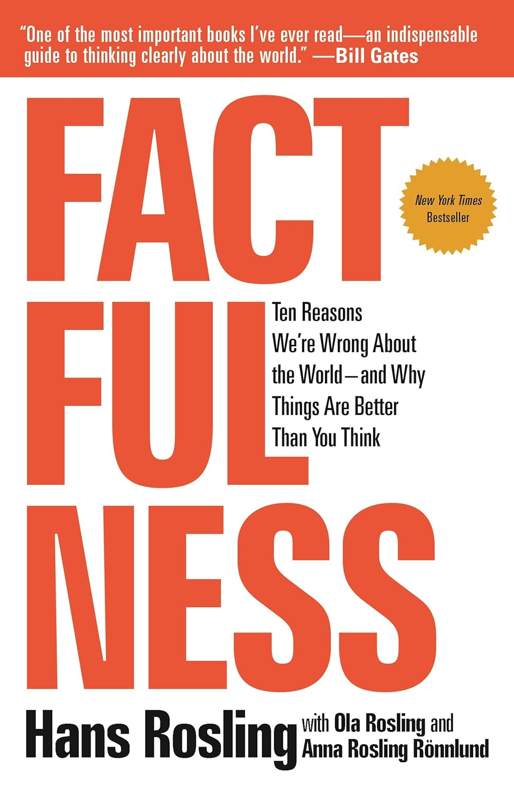

"Factfulness: Ten Reasons We're Wrong About the World - and Why Things Are Better Than You Think"
- Read on 2025-09-10
- Rating: ️️️️️
- Format: 🎧 (8 hours 51 minutes)
While the book's subtitle is a central premise of the book, to me it felt like the book was far more about critical thinking skills, and how important they are. Paranoia seems to be a range or a spectrum. We're all at a different place in there, with each of us being concerned about things others might or might not agree with. I have some friends who have some concerns SO FAR off my radar, it feels shocking each time they come up. Major life decisions have been (and continue to be) made around those concerns. My mother may shake her head at this description of concern/paranoia, thinking I'm describing myself by describing my friends, I can at least acknowledge my idiosyncrasies, and that I'm working on some of them. Regardless, some of those things my friends are concerned with (and that I've been mistaken about) are addressed in this book. (No, you're not those friends. How do I know? I'm not friends online with them.)
But I'll go back to my initial comment - this book takes another great look at critical thinking skills. Of so many courses I took in college, my critical thinking class remains one of those most referenced in my memory, and this book would be a fine refresher or primer for anyone. Plus, it's a great perspective on some common misunderstandings and where they originated (and simply have been updated to reflect reality).
- Prior: Congo
- Next: The Anxious Generation